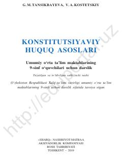

KH9-sinf o'quvchilari uchun Konstitutsiyaviy huquq asoslari bo'yicha darslik.
Mazkur darslik umumiy o'rta ta'lim maktablarining 9-sinf o'quvchilari uchun mo'ljallangan bo'lib, O'zbekiston Respublikasining Konstitutsiyasi va konstitutsiyaviy huquq asoslarini o'rgatadi. Kitobda davlat va shaxs o'rtasidagi munosabatlar, fuqarolarning huquq va burchlari hamda milliy qonunchilik tizimi yoritilgan.